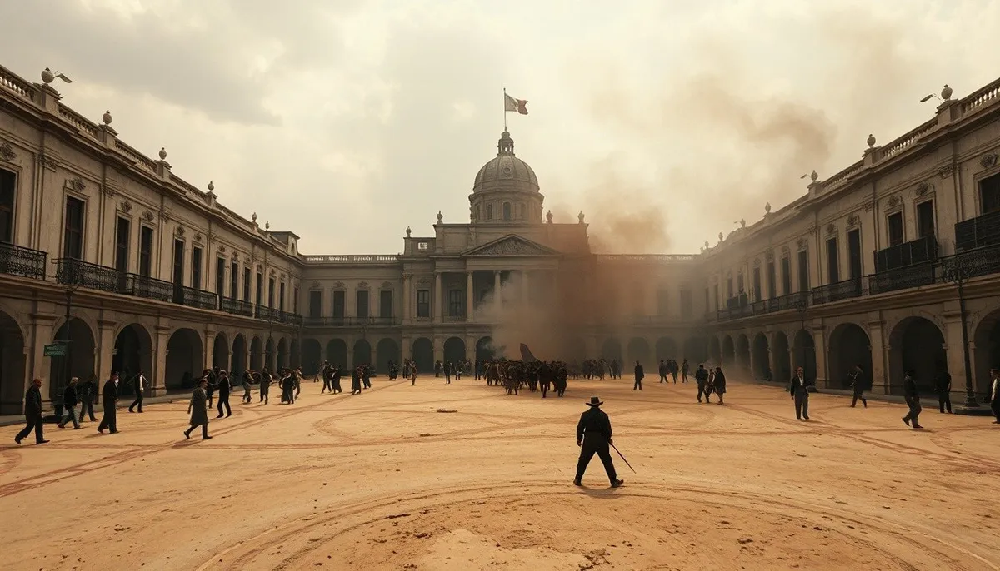

OKpolítico
OKpolítico1813: El relevo del virrey y la marcha al sur

Episodio 8 de la serie 'Historia política de México, año por año'. Analizamos la primera parte de 1813 (enero a abril): la destitución del virrey Francisco Javier Venegas y la asunción de Félix María Calleja al poder en la Ciudad de México, así como el avance militar de José María Morelos en su Cuar
Compartir por WhatsApp▶ Ver este video en YouTube y suscríbete
Apertura: La paradoja del inicio de 1813
A comienzos de 1813, el destino de la Nueva España se debatía entre la aplicación inconclusa del marco constitucional gaditano y la violencia desatada en los campos de batalla. En la capital, la autoridad colonial intentaba contener el descontento popular y el colapso financiero, mientras en las provincias del sur los ejércitos insurgentes ganaban un terreno crucial.
¿Cómo fue que el militar más temido por la insurgencia terminó asumiendo el control absoluto de la Nueva España mientras el caudillo rebelde más audaz marchaba a cercar el puerto más estratégico del Pacífico? El 3 de enero de 1813, José María Morelos recibió informes directos sobre la simpatía que la causa de la independencia despertaba entre amplios sectores de la población capitalina.
✉️ Recibe lo importante del día en tu correo. Suscríbete gratis →La inquietud de las autoridades coloniales crecía al ritmo en que las tropas rebeldes consolidaban sus posiciones en el sur del territorio novohispano.
Situación política: Transición en el Palacio Virreinal
El año arrancó con una profunda crisis de mando en el gobierno novohispano. Tras haber promulgado la Constitución de Cádiz el 30 de septiembre de 1812 y haber suspendido arbitrariamente las garantías electorales y la libertad de prensa en la capital a finales de ese mismo año,
la figura del virrey Francisco Javier Venegas quedó severamente desgastada ante las cortes y los sectores absolutistas. La presión ejercida por los comerciantes peninsulares y las tensiones internas desembocaron en la decisión de la Regencia de destituir a Venegas.
El mariscal de campo Félix María Calleja, comandante del Ejército del Centro y respetado por la élite por sus contundentes victorias militares, fue designado para sustituirlo. El 28 de febrero de 1813, Félix María Calleja hizo su entrada formal a la Ciudad de México, donde fue recibido por el propio Venegas en un ambiente de tensa cortesía institucional.
Días después, el 4 de marzo de 1813, se realizó la ceremonia oficial de entrega del bastón de mando en el palacio virreinal, oficializando el relevo de la máxima autoridad de la colonia.
Al asumir el cargo, el virrey Calleja publicó de inmediato una proclama en la que ratificó formalmente su apego al régimen constitucional español, pero al mismo tiempo anunció medidas draconianas. Ante la quiebra del erario, creó una junta permanente de arbitrios, suspendió sobresueldos burocráticos y decretó el reclutamiento masivo de tropas para sofocar la rebelión.
Los actores del conflicto a principios de año
Mientras Calleja tomaba el control político y administrativo en la capital, la conducción insurgente se reorganizaba tanto en el terreno militar como en el político. José María Morelos emergía como la figura indiscutible del movimiento, rodeado de mandos de alta efectividad como Mariano Matamoros y Vicente Guerrero.
Por su parte, la Suprema Junta Gubernativa creada en Zitácuaro sufría un desgaste irreversible debido a las enconadas disputas internas entre sus vocales. Ignacio López Rayón intentaba mantener la cohesión del grupo promulgando sus Elementos Constitucionales, pero su insistencia en mantener la figura de Fernando VII chocaba frontalmente con la postura de Morelos.
Morelos rechazó de forma tajante la cobertura monárquica que defendía Rayón. En la correspondencia intercambiada a inicios de año, el caudillo del sur abogó decididamente por la ruptura total con la Corona e impulsó la idea de convocar un nuevo órgano representativo verdaderamente soberano.
En el bando realista, figuras jóvenes de la oficialidad militar como Agustín de Iturbide continuaban escalando posiciones gracias a su rigurosa disciplina táctica y a la contención activa de los focos rebeldes en las provincias del Bajío.
Conflictos y operaciones militares: La Cuarta Campaña de Morelos
El 9 de febrero de 1813, José María Morelos emprendió formalmente su cuarta campaña militar saliendo de la ciudad de Oaxaca con rumbo al puerto de Acapulco. La posesión de esta plaza era prioritaria para interrumpir el comercio marítimo del Pacífico y consolidar un dominio territorial continuo en la costa del sur.
A medida que la columna insurgente avanzaba, Morelos estructuró el mando de la región. El 14 de marzo de 1813, nombró a Vicente Guerrero como comandante militar de Ometepec, encomendándole el aseguramiento de los suministros y la pacificación de las poblaciones comarcanas.
Entre el 6 y el 12 de abril de 1813, las tropas insurgentes al mando de Morelos lanzaron un ataque sistemático contra la ciudad de Acapulco,
logrando romper las líneas defensivas exteriores y penetrar en el casco urbano. Sin embargo, la guarnición realista conducida por Pedro Antonio Vélez se replegó en el imponente Fuerte de San Diego.
En paralelo a las acciones del sur, las operaciones militares se extendieron a otras provincias. El 14 de abril de 1813, el jefe insurgente Mariano Matamoros consiguió una importante victoria táctica al lograr la conquista de Tehuantepec, afianzando la presencia insurgente en el istmo.
Al mismo tiempo, en el centro del país la lucha no daba tregua. El 15 de abril de 1813, Ramón López Rayón infligió una sangrienta derrota al jefe realista Agustín de Iturbide en el Puente de Salvatierra,
obligando a las fuerzas del virreinato a replegarse temporalmente en la provincia de Guanajuato.
Economía y sociedad en el primer cuatrimestre
El primer tercio de 1813 estuvo marcado por la parálisis de los circuitos comerciales y el desabasto generalizado. La ocupación insurgente de las minas del sur y el bloqueo de los caminos principales ahogaron la recaudación fiscal,
impidiendo el traslado regular de insumos esenciales como el azogue para la extracción de plata. La escasez de numerario y la destrucción de fincas agrícolas provocaron una severa crisis económica en las ciudades principales.
Para intentar contener la quiebra del erario militar, el virrey Calleja decretó la creación de una junta permanente de arbitrios e impuso contribuciones obligatorias a la población civil y a los comerciantes capitalinos.
Relaciones internacionales y disputas fronterizas
A pesar del aislamiento diplomático, la causa de la independencia comenzó a proyectar sus conflictos hacia la frontera norte. En las Provincias Internas, la expedición del Ejército Republicano del Norte, compuesto por filibusteros estadounidenses e insurgentes mexicanos, penetró en el territorio de Texas para desafiar al dominio español.
El 29 de marzo de 1813 se libró la Batalla de Rosillo Creek en el actual condado de Bexar, cerca de San Antonio de Béjar. Las tropas republicanas derrotaron contundentemente al ejército realista encabezado por Manuel María de Salcedo, tomando brevemente el control político de la región texana.
El contexto global en el primer trimestre de 1813
En el escenario europeo, las Guerras Napoleónicas llegaron a un punto de inflexión. Tras el desastre de la campaña de Rusia a finales de 1812, las tropas francesas comenzaron a retirarse del norte de Europa.
El 4 de marzo de 1813, la guarnición francesa evacuó Berlín, permitiendo la entrada victoriosa de las tropas rusas. Semanas más tarde, el 17 de marzo de 1813, el Reino de Prusia declaró formalmente la guerra a Francia,
sumándose a la Sexta Coalición e introduciendo la condecoración de la Cruz de Hierro para movilizar el sentimiento nacionalista alemán. En la Península Ibérica,
el parlamento liberal de Cádiz dictó una resolución histórica el 22 de febrero de 1813 al decretar la abolición definitiva del tribunal del Santo Oficio de la Inquisición, una medida de profundo impacto institucional en todas las dependencias del imperio español.
En América del Sur, los movimientos emancipadores obtuvieron avances trascendentales. El 31 de enero de 1813 se inauguró en Buenos Aires la Asamblea del Año XIII para fijar las bases institucionales del Río de la Plata.
Poco después, el 3 de febrero, José de San Martín obtuvo su primera victoria militar en el combate de San Lorenzo. El 20 de febrero de 1813, Manuel Belgrano derrotó a las fuerzas realistas en la Batalla de Salta, asegurando las provincias del norte argentino.
Paralelamente, en el norte de Sudamérica, Simón Bolívar dio inicio el 8 de enero a la denominada Campaña Admirable, obteniendo el 28 de febrero un triunfo estratégico en la Batalla de Cúcuta.
Mito vs. historia documentada
La narrativa historiográfica tradicional suele pintar el relevo del virrey Venegas como un simple golpe militar sin sustento legal impulsado por la desesperación. Sin embargo, la documentación administrativa demuestra que la remoción se ejecutó bajo los cauces institucionales dictados por la Regencia española desde septiembre de 1812.
Asimismo, existe el mito popular de que la toma de Acapulco por Morelos fue una victoria fulminante e instantánea en abril de 1813. Los archivos de campaña demuestran que, si bien la ciudad fue ocupada a mediados de abril,
el Fuerte de San Diego permaneció bajo control realista fuertemente pertrechado, obligando a los insurgentes a sostener un desgastante sitio de varios meses.
Consecuencias y balance del primer cuatrimestre
Al finalizar el mes de abril de 1813, el panorama político y militar de la Nueva España se hallaba profundamente polarizado. La asunción de Félix María Calleja reorganizó la maquinaria de guerra novohispana bajo un mando autoritario y dispuesto a concentrar todos los recursos económicos en la represión de los focos rebeldes.
Por otro lado, la marcha firme de José María Morelos sobre la costa del Pacífico y el sometimiento gradual del puerto de Acapulco otorgaron al caudillo un prestigio militar supremo. Esta posición de fuerza le permitiría empezar a proyectar la convocatoria de un gran congreso constituido para dar forma legal al nuevo estado independiente.
Respondiendo a la interrogante planteada al inicio de este año: Félix María Calleja tomó el virreinato para imponer un régimen de movilización total y solvencia fiscal de emergencia, mientras que Morelos marchó hacia Acapulco para demostrar que la insurgencia podía dominar plazas estratégicas de escala internacional.
El choque de estos dos gigantes definiría el rumbo trágico y decisivo de los meses venideros.
Sigue viendo
Con información de
Del Arenal Fenochio, Jaime. Cronología de la Independencia (1808-1821), INEHRM, 2011. · Memoria Política de México — Félix María Calleja toma posesión como Virrey · Wikipedia — Francisco Javier Venegas · Museo de las Constituciones UNAM — La Constitución de Cádiz en México · Colección Cuarta Campaña Militar (1813) — Instituto de Investigaciones Históricas UNAM